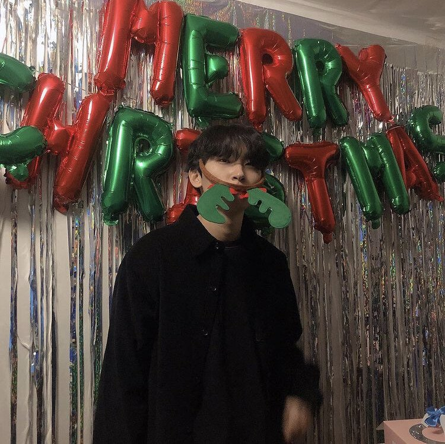

그 후 종종 이상호와 디스코드를 하던 중 같이 합방까지 하게 되고 어느 날 이상호가 디스코드로 자신의 게임에 대한 피드백을 받는 "진실의 방" 이라는 컨텐츠를 진행 중이었고, 이로 인해 시청자들에 호응을 얻기 시작했고 시청자들에게 이름이 각인되었다.
롤 솔랭 방송, LCK 중계, 멸망전 등 롤판에서 주도적인 입지를 가지고 있다. 과거 인기에 비해 롤 실력이 부족한 편이었지만, 노방종으로 자신의 티어를 어떻게든 올리는 절실한 방송이, 수많은 롤 유저들의 심금을 울리면서 방송 또한 흥하게 되었고, 2023년 인생 첫 마스터를 찍을 정도로 티어가 상승했다. 물론 롤판의 네임드들은 대부분 마스터와 챌린저를 왕복하는 괴물이고 전프로 출신도 드글드글하다보니, 천상계와 함께 롤 방송을 진행할 땐 팀원들에게 주로 까이는 역할이다. 자신과 친한 동갑내기 롤 비제이들과 사적으로 친구가 되어 여행 방송 등 롤 밖에서도 함께하는 일이 늘어났는데, 이들을 통칭해 95즈라고 불린다.